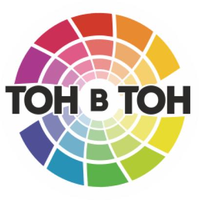

Что такое колеровка
Колеровка- это процесс придания лакокрасочным составам определенного цвета путем внесения в рабочую основу (бесцветную или белого цвета) специальных красителей.
Компьютерная колеровка – это технологический процесс разбавления краски пигментом для получения нового оттенка. Компьютерная колеровка обладает несколькими преимуществами:
- Возможность получения любого оттенка
- Огромная палитра цветов
Система компьютерной колеровки ТОН в ТОН

Более 15 видов колеруюмых красок
Более 10 000 цветовых оттенков
Современное оборудование
Этапы колеровки лакокрасочных материалов:
- Выбор материала для колеровки;
- Выбор цвета согласно каталогу цветов КОЛЕР, RAL, NOVA, Tikkurila, NSC;
- Специалист выбирает в программе Color Composer необходимую базу, указывая объем тары и количество кг;
- Происходит автоматическое добавление колеровочной пасты в базовую краску;
- Клиент получает желаемый цвет.

Поможем сделать выбор
Заполните форму обратной связи, и наш специалист свяжется с вами